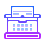

Writing Content at a Level That a Wide Range of Users Will Understand
Content Writing and Marketing
This website would have users with vastly different needs, and different levels of reading comprehension. The content articles about health that I wrote had to fall somewhere in the middle when it came to comprehensibility. It was very important that I communicate the health risks of addiction and pregnancy to people who were currently using, and I had to keep the interest of potential donors and investors. And again, no one type of user was any more important than another.